Comme nous avons déjà pu le découvrir à travers les articles précédents de ce numéro hors-série, ils furent nombreux ces héros venus de toute la Russie soviétique, évadés des camps allemands et qui firent le choix de poursuivre le combat en rejoignant les différents réseaux de Résistance belge. Pourtant sans vouloir être exhaustif, ils sont plus nombreux encore tous ces inconnus qui vous trouver la mort en terre belge et y reposer à jamais. Les pages qui suivent sont principalement extraites du site de l’ambassade de la Fédération de Russie en Belgique avec l’accord de Madame Sofia Sitnikova, Première secrétaire en charge des Affaires culturelles au sein de l’Ambassade de Russie en Belgique, que je tiens tout particulièrement à remercier ici pour les échanges fructueux et conviviaux que nous avons eus. J’associe enfin mes remerciements à l'Archidiocèse belgo-bruxellois de l'Église orthodoxe russe, aux organisations de compatriotes russes et aux institutions étrangères russes accréditées en Belgique pour les photos et leurs efforts pour préserver la mémoire de l'héroïsme des soldats soviétiques morts pendant la Grande Guerre patriotique.
Avant tout, il convient d’attirer l’attention sur le fait que l'orthographe des noms, prénoms et lieux de naissance des citoyens soviétiques inhumés en Belgique peuvent être faussée car ils sont écrits assez souvent en flamand et en français dans les livres d'enregistrement et sur les monuments.
Il a été choisi de présenter les différents lieux de mémoire en les présentant par leur proximité géographique avec les suivants afin de permettre à ceux qui souhaiteraient s’y recueillir d’identifier les plus proches et débutons avec la province de Luxembourg.
ENGREUX
Au vieux cimetière d’Engreux, Houffalize, à une dizaine de kilomètres au nord de Bastogne, se trouve la tombe de Fedor Konovalov, né à Moscou en 1912.
Cette sépulture a été localisée en 2011. Elle présentait une croix orthodoxe en bois avec l’inscription suivante sur une plaquette :
« Ici repose Feodor Konovalov
. Moscou 1912 - Engreux 02.04.1944. Capitaine de blindé soviétique prisonnier des Allemands – mis au travail dans les mines du Limbourg – Evadé – Rejoint la Résistance belge – Abattu par les Allemands le 2 avril 1944 »
Des travaux de restauration de la sépulture ont été financés par l’Ambassade en 2015
ARLON
Au cimetière communal d’Arlon (province de Luxembourg) se trouve la tombe d’un officier soviétique. Le nom « Robelsovs Vasile » est inscrit sur une croix en béton. D’après les informations, il s’agit de la sépulture de Vassili Bobeltsov, né le 30.12.1906, probablement prisonnier de guerre, tué le 31.10.1944. Il n’existe pas de données plus détaillées.
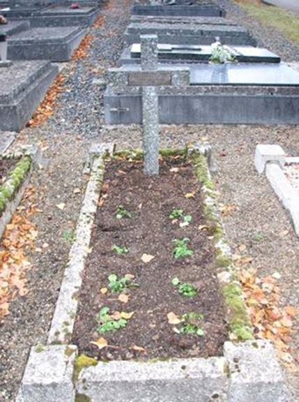La sépulture se trouve dans la partie ancienne du cimetière, à côté des tombes de plusieurs membres de la Résistance belge et d’un militaire canadien. Sa localisation remonte à 2010.
CHAMPLON
Dans le cadre du travail de mémoire militaire entrepris par l’Ambassade de Russie en Belgique, les sépultures de deux citoyens soviétiques ont été localisées en 2010 à Champlon, commune de Tenneville (province de Luxembourg). Apparemment, les croix ou stèles initiales ont disparu. Seule l’inscription en français « A nos Camarades russes » figure encore sur le mur du cimetière, à côté d’une parcelle suffisamment grande pour deux tombes.
D’après des informations provenant d’archives militaires russes, il s’agirait des tombes de Timofeï Pouchkine (1916, RSSA de Mordovie, tué le 26.08.1944) et de Boris Tonkitsky (1924, domicilié à Koursk, tué le 07.07.1944). Ces partisans soviétiques s’étaient battus au sein de la Résistance après s’être évadés d’un camp allemand situé en Belgique.
Sur le lieu d’inhumation de ces héros tombés dans la lutte contre le nazisme au cours de la Seconde Guerre mondiale, un monument de granit gris a été érigé à l’initiative de l’Ambassade de Russie sur financement public de la Fédération de Russie. L’inscription suivante en langue française est gravée sur la stèle : « Ici reposent les soldats russes Timofeï Pouchkine (1916-26.08.1944) et Boris Tonkitsky (1924-07.07.1944) ».
CHIMAY
Au cimetière de Chimay sont inhumés cinq citoyens soviétiques. Les tombes se trouvent dans la parcelle du cimetière dédiée aux victimes des Première et Seconde Guerres mondiales. Les sépultures sont disposées en deux rangées (une et quatre). Les stèles sont des dalles en béton peintes en blanc. Chacune des quatre est gravée d’une faucille et d’un marteau, ainsi que de l’épitaphe suivante en français : « Ici repose un soldat russe ».
D’après les informations disponibles sur les quatre tombeaux, il s’agit d’un officier et de trois soldats, fusillés par les fascistes pour avoir rejoint la Résistance belge. Ils furent capturés en forêt au nord de Chimay avec d’autres patriotes belges. Jusqu'en 2013 les noms étaient inconnus. Grace aux efforts des historiens belges - Benoit Gosset et son épouse Elena Mamontova – on a réussi à établir l'identité de l'une des victimes - Ivan Selivanov. Le 12 octobre une cérémonie a eu lieu sur la cimitière avec la participation des petits-enfants du soldat.
HAN SUR LESSE
Deux citoyens soviétiques sont enterrés au cimetière communal d’Han-sur-Lesse (province de Namur). Leur identité n’est pas totalement établie, mais il y a lieu de penser qu’un d’entre eux s’appelait Feodor Sidorov, résistant tué (peut-être décédé à la suite de blessures) le 17 août 1944 à Han-sur-Lesse ; l’autre, un certain Anatoli, dénommé « le skieur » dans des documents, tomba le 16 août 1944 à Ave-et- Auffe.
Des plaques en marbre avec l’épitaphe "Soldat russe inconnu" sont fixées sur les sépultures. La troisième tombe du carré est celle d’un résistant belge tué en même temps que ses camarades russes. Un monument funéraire est érigé à 3 km du lieu où Anatoli et son compagnon de la Résistance furent abattus
Le monument fut érigé en 1970 à l’initiative des habitants d’Han-sur-Lesse à l’endroit où furent tués les Résistants, dont deux Fedor Sidorov et Anatoly.
Le monument, anonyme est orné de deux épitaphes en français :
« Ces pierres qui ont bu votre sang nous vous les dédions Ô Héros obscurs venus ici donner votre vie pour conserver la nôtre » ;
« En souvenir des aviateurs américains et des résistants russes et belges tombés en ces lieux 1940-1945 ».
Au-dessus des plaques sont fixés les drapeaux de trois pays : Belgique, Etats-Unis et Russie.
AWENNE
Au cimetière communal d’Awenne, Saint-Hubert (province de Luxembourg), se trouve la tombe de Sergeï Issakov, un prisonnier de guerre soviétique qui combattit dans les rangs de la Résistance belge après s’être évadé d’un camp allemand. Blessé par balle, il mourut à Rochefort le 15 septembre 1944, à l’âge de 29 ans.
La sépulture bordurée et recouverte de gravillons est fleurie chaque année. Sur la stèle cruciforme en béton figure l’inscription en français « Serge Isakoff 1915-1944 ».
SERGEÏ ISSAKOV
Né en 1915, Sergeï Issakov (ou Serge Isakoff dans les sources belges) était probablement originaire de l’Oural. En Russie, d’après les renseignements disponibles, il avait une épouse et des enfants. Capturé par les Allemands, il fut envoyé en camp de travail en Belgique du côté de Mochamps (à 6 km de Champlon et 10 km d’Awenne). S. Issakov s’évada grâce à l’aide de combattants de la Résistance, dont il rejoint ensuite les rangs.
Durant de nombreux mois, il demeura caché dans un cabanon semi-enterré derrière la maison d’une habitante locale (Mme Marie Minet, route de Mormont). À ses heures perdues, « il bricolait d’ingénieux montages avec des matériaux de fortune1 ».
En septembre 1944, il fut chargé d’aller récupérer des armes cachées au maquis de Belvaux. À la suite d’un accident, il fut blessé à la tête par un de ses camarades qui l’avait confondu avec l’ennemi. « Aujourd’hui, il repose au cimetière d’Awenne au milieu des nôtres qui l’avaient adopté2 ».
Son ami Michaël Chalimov (surnommé « Michka » par les Belges) combattit également à ses côtés au sein de la Résistance. Ce jeune soldat soviétique s’était évadé d’un camp allemand situé à Cologne. Après la mort de son camarade, M. Chalimov regagna sa patrie, avec la ferme intention de retrouver la famille d’Issakov. On est sans nouvelles de lui depuis lors.
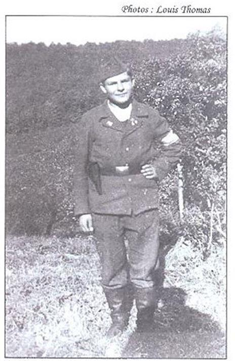
Michaël Chalimov vêtu d'uniforme militaire belge
NIDRUM
Une sépulture se trouve au petit cimetière communal de Nidrum (17 km au nord-est de Malmedy, province de Liège). Il pourrait s’agir de prisonniers de guerre soviétiques enterrés ici dans les années 1942-1944.
La parcelle présente 28 stèles de couleur blanche, mais les autorités locales ne disposent d’aucune information sur l’identité et le nombre exact des défunts.
La partie supérieure de chaque stèle présente une plaquette métallique ronde avec étoile jaune sur fond rouge. Au milieu de chaque stèle figure l’inscription en russe : « Prisonnier militaire soviétique inconnu. Guerre 1941-1945 »
Au centre de la parcelle, un monument (œuvre du sculpteur A. Bourganov) a été érigé en 1996. Il s’agit d’une sculpture de bronze sur socle de granit. Sur la partie supérieure du socle figure l’épitaphe suivante en langues allemande, française et russe : « Aux soldats soviétiques morts dans la région de Bütgenbach 1941-1944 ».
Des mâts sont disposés des deux côtés du monument ; les drapeaux de la Belgique et de la Russie y sont hissés les 8 et 9 mai.
SOUGNÉ-REMOUCHAMPS
Au cimetière central de Sougné-Remouchamps (province de Liège) est inhumé, aux côtés de victimes belges des Première et Deuxième Guerre mondiales, Aleksandr Charov, membre de la Résistance belge, tué le 19 juillet 1944.
LIÈGE, ROBERMONT
Au cimetière de Robermont, à Liège, se trouve une importante sépulture internationale de la Première Guerre mondiale. Y reposent 183 militaires russes, dont un général, neuf colonels et quatorze officiers de l’armée impériale.
Au cours de la Seconde Guerre mondiale, au moins six prisonniers de guerre soviétiques furent inhumés dans la parcelle russe du cimetière.
Ivan Simionovitch ANTIPOV (Antipow)
Né le 03 septembre 1908 dans la Province de Voronej, District de Novaya Tchigla, N-Tchigla.
Mort le 05 mars 1943 au Stalag VI K (326).
Wasili ESCHERNICK
Né le 11 novembre 1909 à Vorochilovgrad.
Mort le 25.01.1943.
Grigori Onufrievitch TERESCHENKO
Né le 1er mars 1915 Province de Vinnitsa, District de Sitkovtsy, Krasnenka.
Tué lors du bombardement du Stalag 304 le 9 mai 1944.
Ivan Mironovitch MATALYGIN (Motalygin)
Né le 09 mars 1909, Prov. de Saratov.
Mort le 22 février 1943 au Stalag 352, matricule 42737.
Vassili Nikititch TSCHERNYCH
Maréchal des logis.
Né le 11 novembre.1909 à Voltché.
Mort le 26 janvier 1943 au Stalag VI K (326).
Aleksandr Ivanovitch PANINE
Né le 1er mai 1920, Prov. de Saratov.
Tué lors du bombardement du Stalag 304 le 9 mai 1944.
Cérémonie solennelle annuelle de dépôt de gerbes
LIÈGE, CITADELLE
À la Citadelle de Liège se trouve un mémorial militaire dénommé « Enclos des fusillés », où reposent des prisonniers de guerre de différentes nationalités, fusillés par l’occupant allemand dans les années 1942-1944. Pendant la Seconde Guerre mondiale, des prisonniers étaient incarcérés à la Citadelle. Au cours du conflit, 415 personnes, dont 14 prisonniers de guerre soviétiques, y furent abattues.
Chaque tombe présente une croix en béton de couleur blanche, avec plaquette de bronze gravée en français. Sur une dizaine d’entre elles figure l’inscription « Prisonnier de guerre russe fusillé par les Allemands », avec la date de l’exécution. Sur quatre tombes il est indiqué : « Prisonnier de guerre inconnu fusillé par les Allemands ». Il a été établi par les collaborateurs de l’Asbl « La Maison russe à Liège » qu’il s’agissait également de citoyens soviétiques.
Toutes les sépultures sont anonymes. Les autorités communales ne disposent pas d’autres détails.
Dans l’enclos ont également été érigées deux croix commémoratives en hommage à Evgueni Dotsenko et Anatoli Chestopalov, des commandants soviétiques d’unités de partisans tombés au combat en Belgique.
Originaire de Dniepropetrovsk, le capitaine A. Chestopalov commandait une section du groupe « Zoro » ; en juin 1944, celle-ci se retrouva encerclée à Lamine : tous les membres y périrent sous les balles allemandes ou leurs dernières munitions.
Originaire de Stalingrad, commandant de l’Armée rouge, commissaire politique au 9ème régiment de la 89ème division d’infanterie, Evgeni Yossivovitch Dotsenko avait été capturé au tout début du conflit et incarcéré au camp de Mülheim. Il s’en évada en 1942 et rejoint le Front de l’indépendance en Belgique. Il y forma et dirigea un escadron composé de Soviétiques évadés. Abattu le premier avril 1944, le Commandant Dotsenko est inhumé à Comblain-au-Pont.
NAMUR, BELGRAD
Au cimetière mémorial de Belgrade à Namur, parmi les tombes de victimes originaires de différents États, se trouvent celles de seize Soviétiques, prisonniers de guerre et membres de la Résistance belge. La sépulture, qui date des années 1942-44, occupe une parcelle de 10x5 mètres, avec un monument en son sein et seize pierres tombales mentionnant les noms des défunts.
Au milieu de la parcelle a été érigé un monument réalisé par le sculpteur A. Bourganov. Sur son socle de granit figure l’épitaphe en russe et en français : « Aux soldats soviétiques tombés à Namur. 1941 – 1945».
Liste des défunts :
RIUPRAKOV I. - OSVATCHIUK I. - KOSTAR Kh. - JIOTOVIK J. - PERCHEVITS А. - LOGSMON А. – CHOVODOROV - NEKRESSARO I. - MANIUS А. - SEMINARO V. - LESTICH N. - CHORFN А. et quatre inconnus.
FLAWINNE
C’est en 2012 que l’Ambassade de Russie en Belgique reçut la confirmation documentée de la présence, au cimetière communal de Flawinne, en périphérie namuroise, de plusieurs sépultures de personnes fusillées par la Gestapo en 1943-1944 à la Caserne du Sous-Lieutenant Thibaut, aujourd’hui Musée des Commandos. Parmi les victimes figuraient des partisans soviétiques et yougoslaves, ainsi que des maquisards belges.
Deux citoyens soviétiques y furent identifiés:
Nikolaï MIKHEEV, né à Moscou et tué le 23 août 1944.
Ivan OSSATCHUK, né à Lozovaya le 21 juin 1926 et tué le 1er décembre 1943.
D’après certaines informations, un des défunts inconnus inhumés à cet endroit serait un prisonnier de guerre ou un partisan soviétique.
L’Ambassade de Russie a financé en 2013 la restauration des sépultures.
JUMET-GOHYSSART
Au cimetière de Jumet-Gohyssart (faubourg de Charleroi, province de Hainaut) est inhumé le militaire soviétique Mikhaïl PLOTNIKOV, né le 02 février 1920 à Stalinabad (aujourd’hui Douchanbé), en RSS du Tadjikistan. D’après les informations, il était membre de la Résistance belge.
Selon les autorités locales, après la libération de Charleroi de l’occupant allemand en septembre 1944, un énorme charnier fut découvert du côté de Jumet (le charnier du Diarbois) où reposent des personnes fusillées par les fascistes durant l’Occupation.
Sur les 241 corps (238 hommes et trois femmes originaires de neuf États européens), seuls 207 ont pu être restitués aux familles des victimes. Les autres, longtemps non réclamés, ont finalement été inhumés à l’initiative de l’administration communale dans un carré spécifique du cimetière.
En dépit du fait qu’il existe aux archives communales des informations sur le numéro de la sépulture d’un soldat soviétique (194/35), il n’a toujours pas été possible actuellement de localiser celle-ci de manière précise ; en effet, le lieu d’inhumation des cadavres inconnus et non réclamés est une sorte de sépulture commune en forme de pelouse d’honneur recouverte de gravillons.
Le carré est entouré d’un muret de béton où l’on peut lire sur la partie centrale : « Ici reposent les restes de 24 héros civils fusillés par l’ennemi au cours de la guerre 1940+1945 ». Du côté gauche du carré a été érigée une stèle en béton sur laquelle figure en lettres de bronze l’épitaphe : « En l’honneur des victimes des deux Guerres 1914-1918 et 1940-1945 ».
Le 9 mai 2012, une tablette nominative reprenant l’identité du soldat soviétique a été fixée sur la sépulture commune. Le marbre gris est désormais frappé de l’épitaphe suivante en lettres dorées : « Mikhaïl Plotniko, né le 02.02.1920 à Stalinabad, URSS. Fusillé par les nazis à Charleroi. Membre de la Résistance belge ».
À proximité de l’aéroport de Charleroi (au croisement de la 11ème rue du Zoning industriel et de l’Allée centrale du Zoning de Jumet) a été érigé en 2004 un monument aux victimes fusillées. Il représente une figure masculine ligotée devant un mur. Au-dessus du monument a été fixée une plaque avec l’épitaphe en français : «Hommage aux 241 victimes du Charnier de la Serna. Charleroi le 4 septembre 2004».
Chaque année, en août-septembre, les autorités locales et les associations de vétérans se rassemblent au pied du monument et y invitent les représentants des États étrangers comptant des citoyens tombés en cet endroit.
Le monument est fleuri tous les 9 mai par les membres des représentations étrangères russes en Belgique.
FLEURUS (VIEUX-CAMPINAIRE)
Dans une sépulture commune du cimetière de Fleurus (cette sépulture est reprise sous l’appellation « Vieux Campinaire » dans certaines sources), en province de Hainaut, sont enterrés cinq citoyens soviétiques. Il s’agit d’une parcelle entourée d’une bordure et recouverte de briquaillons. La dalle disposée verticalement au chevet est gravée des cinq noms, avec les dates d’inhumation, une étoile rouge et l’épitaphe suivante en russe : « Dormez en paix, fils de la Russie, la Patrie se souvient de vous ».
D’après les informations disponibles, il s’agit de cinq prisonniers de guerre décédés durant leur détention en camp de travail dans les mines de charbon de la région de Charleroi en 1943.
Au registre du cimetière sont également répertoriées deux sépultures anonymes avec l’annotation « russe », mais sans localisation ou possibilité de localisation sur place.
LISTE DES DÉFUNTS
Afanassi Davidovitch KUTCHER
Né en 1908 et mort le 5 avril 1943.
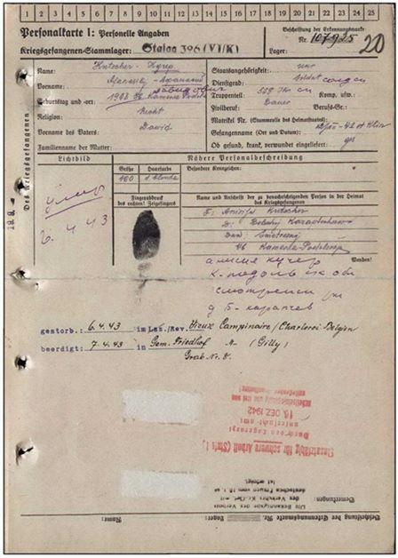
Dimitri Pavolovitch IANKOV (Jankour)
Né en 1921 (RSS du Kazakhstan), mort le 22 janvier 1943.
Iakov Ivanovitch BANNIKOV
Né en 1898, District d’Ordjonikidzé.
Mort le 8 janvier 1943.
Iakov Ivanovitch UCHAROV
Né le 29 janvier 1900 à Semiarsk.
Mort le 6 janvier 1943.
Petr Ivanovitch POLOVNEV
Né le 6 juin 1910 à Koursk, Potkorn. Mort le 26 novembre 1943.
Il demeure quelques témoignages des personnes ayant côtoyés des prisonniers russes qui étaient placés au camp de prisonnier du Campinaire (Fleurus).
Prisonnier russe par le peintre Grégoire MichonzeDes prisonniers russes sont réquisitionnés pour travailler dans les mines, mais ceux-ci refusent de produire pour les Allemands, et ralentissent au maximum les cadences s’exposant à des sanctions inhumaines.
On se demande même si les Allemands les considéraient comme des êtres humains. Au fil des anecdotes que me racontait mon grand-père, je ne le crois pas… des animaux auraient été mieux traités.
Prisonnier russe en 1941.
Camp de prisonnier du Campinaire, Fleurus. Dans l'esprit des Allemands, les Russes n'étaient pas des prisonniers de guerre comme les autres car « bolchéviques ». Ils ne bénéficiaient donc pas à leurs yeux de la protection de la Convention de Genève. Les Allemands les parquaient dans des camps avec des baraquements immondes qui ressemblaient plus à un camp de concentration qu'à un camps de prisonniers de guerre avec des lits superposés serrés les uns contre les autres.
Comme des animaux sans aucune mesure d'hygiène, pieds nus, avec juste quelques vêtements en guenilles, rongés par la vermine, les poux, la gale, sous alimentés voire même affamés. Les plus faibles dormaient en dessous et étaient chaque nuit attaqués par les rats qui pullulaient dans les baraquements puis étaient laissés là dans ces mouroirs tandis que les plus valides étaient voués aux travaux forcés jusqu'à l'épuisement total et la mort.
Tous les prisonniers de guerre russes vont pieds nus. Pour l'hiver, un certain nombre de paires de chaussures seront distribuées, mais des centaines d'entre eux seront sans chaussures dans le prochain hiver, baraquements presque sans chauffage, nourriture pauvre et peu abondante... les conditions de survie sont effroyables.
Cérémonie solennelle annuelle de dépôt de gerbes en 2020
MONTIGNIES-SUR-SAMBRE
Dans ce cimetière ont été inhumés les prisonniers soviétiques morts le plus souvent des conditions inhumaines dans lesquelles ils se trouvaient au stalag V IK de Marchienne-au-Pont. Les 12 tombes sont toujours soigneusement entretenues.
LISTE DES DÉFUNTS
Ivan BAROWKA (Jean Borovka) né le 7 février 1914 à Pskov et mort le 25 mai 1944.
Timoteï Mikhaïlovitch KOUSATCHOV né le 9 février 1901 (RSSA de Mordovie Bolchie Gorki) et mort le 27 novembre 1942.
Vasily GERASIMENKO (Gerassimenko Vassili Semenovitch)
Né le 2 janvier 1918, Prov. de Omsk, Gagarino.
Mort le 7 avril 1944.
Afanas SCHATUNOV (Chatunov Afanasi Fedorovitch)
Né en 1903 Prov. de Kursk, Streletsk.
Mort le 7 mai 1943.
Tikon KLIMENKO (Klimenko Tikhon Ivanovitch)
Né le 28 juin 1906 Prov. de Voronej, District de Rovinsky, Klimenkovo.
Né le 12 août 1904, Région de Krasnodar, Georgievkaya.
Mort le 18 juillet 1943.
Vasily BOLDIREV (Boldyrev Vassili Zakharovitch)
Né le 10 janvier 1898 RSS d’Azerbaïdjan, District de Chemakha, Derjinovka. Mort le 15 mars 1943.
Trofim FROLOV (Frolov Trofim Konstantinovitch)
Né en 1914, Prov. de Tambov Novo-Urevo. Mort le 20 février 1943.
Ivan MASSIEF (Moisseev Ivan Ivanovitch)
Né le 22 août 1915 Région de l’Altaï.
Mort le 9 mars 1943.
Andre PIKTRIOFF (Pikterev (Pikhterev) Andreï Fedorovitch)
Né le 23 novembre 1900, Prov. d’Orlov, District de Bolkhov, Zlyn.
Mort le 19 février 1943.
Ivan TACTIONOFF (Tretiakov Ivan Ivanovitch)
Né le 19 novembre 1911, Prov. de Voronej Tretiaki.
Mort le 4 février 1943.
Vasily KISILOV (Kizilov Vassili Emelianovitch)
Né le 26 mars 1906, Prov. de l’Altaï - District de Khabary, Novo-Platovo.
Mort le 16 janvier 1943.
MARCHIENNE-AU-PONT
La sépulture se trouve au cimetière communal de Marchienne-au-Pont, à 7 kilomètres de Charleroi, province de Hainaut. Y reposent des prisonniers de guerre soviétiques, décédés aux travaux obligatoires dans les mines de Charleroi durant leur captivité en 1943.
À l’avant-plan de la parcelle a été érigé un long piédestal incliné en granit, sur le socle duquel est écrit en russe et en français : « Aux soldats soviétiques tombés à Marchienne-au-Pont au cours de la Deuxième Guerre mondiale. 1941-1944 ».
Le piédestal est entrecoupé en son centre d’un monument de forme cubique présentant une plaque inclinée où figure l’épitaphe suivante en français : «Les prisonniers politiques, les prisonniers de guerre et les autorités communales se souviennent. 1945-1975 ».
Sont inhumés au Cimetière de Marchienne-au-Pont :
Maxime GUTEKANOVSKY (Grenatovsky Maksim Kirilovitch)
Né en 1901, RSS d’Ukraine, Prov. de Poltava.
Adresse: Région de Krasnodar, District Okhtiarsky, Stepnaya.
Mort le 13 décembre 1943.
Wasily KUSTOW (Kustov Vassili Mikhaïlovitch)
Né le 10 mai 1917 à Saratov.
Mort le 12 mai 1943.
Sawely LITVENKO (Litvinenko Saveli Fedorovitch)
Né en 1907, RSS d’Ukraine, Prov. de Dniepropetrovsk, District de Novomoskovsk, Nikolaevka.
Mort le 26 mai 1943(21.01.1943).
Alexis KIVELOV (Kirilov Alekseï Konstantinovitch)
Né en 1913, Prov. de Iaroslavl, District de Gavriloyamsk, Oyamkovo.
Mort le 22 mars 1943.
Dmitri MINAY (Minaev Dmitir Maksimovitch)
Né le 20 octobre 1900, RSS d’Ukraine, Vorochilovgrad Adresse: Vorochilovgrad, rue. 4 Donetskaya, 58.
Mort le 10 janvier 1943.
Ivan SMALL (Smal Ivan Aleksandrovitch)
Né en 1902, RSS d’Ukraine, Prov. de Tchernigov, Smolyanka.
Mort le 5 janvier 1944.
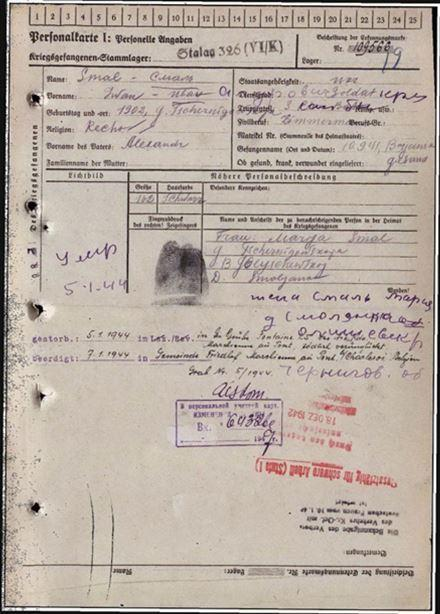
Serge ROUDENKO (Rudenko Sergeï Ilitch)
Né le 20 septembre 1900 (1906), УССР, Киевская обл., Бабанский р-н, д. Островец.
Mort le 26 mai 1943.
Georgy STARADULEZ (Strarodubets Georgi Kirilovitch)
Né en 1895, Prov. de Kherson.
Mort le 25 (29) janvier 1943.
Moisse SCHENTSKUK (Chemtchuk Grigori Moissevitch)
Né en 1900, RSS d’Ukraine, Prov. de Vinnitsa, District Barnovitsky, Stepanovka.
Mort le 15 janvier 1943.
Wassaly SKEPILOW (Chelipov Vassili Fedorovitch)
Né le 5 octobre 1906, Prov. de Kursk, District d’Oktiabrsk, Bytchek.
Adresse: Province Stalinskaya, Makeevka, rue St Tsernalnaya 465.
Mort le 2 novembre 1943.
MONUMENT
En 1989, un monument de 2,5 m de haut a été installé dans la partie gauche du site : une composition plastique en bronze sur un socle en granit (sculpteur A. Burganov, architecte G. Belov).
MORLANWEZ
Au cimetière de Morlanwez (La Louvière, province de Hainaut) sont enterrés trois prisonniers de guerre soviétiques (Stalag VI K (326)), morts aux travaux obligatoire durant leur captivité en 1943.
Les tombes sont situées dans la parcelle militaire du cimetière ; il s’agit de stèles en béton avec plaques de marbre sur lesquelles sont gravés les noms et les dates de décès.
Sont inhumés au Cimetière de Morlanwez :
Ivan KONSMENKO (Kuzmenko Ivan)
Mort le 12 novembre 1944.
Wasily NEMUSLIN (Semuchkine Vassili Egorovitch)
Né en 1906, Prov. de Kouïbychev, Domachka.
Mort le 13 septembre 1943.
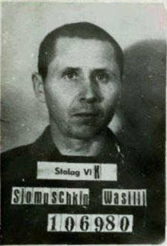
Ivan LEBEDEV (Lebedev Ivan Mikhaïlovitch)
Né en 1915.
Adresse : Moscou, rue Bagritsky 38.
Mort le 2 décembre 1943.
CHAPELLE-LEZ-HERLAIMONT
Au cimetière communal de Chapelle-lez-Herlaimont, Charleroi (province de Hainaut), dans une parcelle dédiée aux victimes des Première et Seconde Guerre mondiales, se trouve la tombe d’un prisonnier de guerre soviétique.
La sépulture présente une dalle de marbre gravée du nom du défunt « Ghwaleew Emeljan », avec la date du décès (08.07.1943), l’étoile de l’Armée rouge et l’épitaphe suivante en français : « Ici repose en paix le prisonnier de guerre russe ». Un morceau (croisillon) d’une croix en bois est visible sur le chevet.
D’après des informations plus précises, il s’agirait d’Emelian Dmitrievitch Faleev, né en 1903 dans le district d’Artëmovsk, province de Stalino (Donetsk).
E.D. Faleev fut capturé le 15 mai 1942 et envoyé dans un camp de travail qui se trouvait en 1942-1944 dans les faubourgs de Chapelle-lez-Herlaimont, à proximité du puits de mine Sainte-Catherine (Stalag VI K 326). Immatriculation 108258.
MAURAGE
Trois prisonniers de guerre soviétiques reposent au cimetière communal de Maurage (rue de la Houblonnière, 2), à 8 km à l’ouest de La Louvière (province de Hainaut).
Deux sépultures anonymes en béton sont réunies par une stèle commune en béton de forme complexe, sur laquelle est gravée l’épitaphe suivante en français :
« Aux citoyens soviétiques morts sur le territoire belge dans la lutte contre le fascisme 1941-1945 ». Une étoile à cinq branches est gravée sur la partie supérieure de la stèle. Les tombes sont individuelles, entourées d’une bordure en béton et recouvertes de gravier gris. Trois bouquets de fleurs artificielles sont disposés sur le périmètre. Un petit passage en béton entre les sépultures permet l’accès à la stèle.
La troisième tombe, qui se trouve à proximité immédiate des deux autres, est composée de deux dalles en béton (horizontale et verticale). La stèle est gravée au nom de « Sachartchenko Alex ».
Fin 2011, l’Ambassade de Russie en Belgique a initié de grands travaux de restauration de la sépulture. En avril 2012, dans le cadre de l’action « Rendons des noms », des plaques reprenant les identités personnelles des défunts furent fixées sur les tombes.
D’après les archives de Maurage, se trouvent inhumées ici les personnes suivantes :
Au cimetière communal de Peissant (Estinnes, province de Hainaut) repose un prisonnier de guerre soviétique, vraisemblablement membre de la Résistance belge. D’après les informations, il s’agit de Richard Povalo (ou Povolo ou Pauvolau), né le 17 septembre 1911 et tué le 1er janvier 1945. Aucune autre donnée n’est disponible.
La sépulture présente une simple croix en béton sur laquelle est fixée une plaquette métallique avec nom, prénom, dates de naissance et de mort. On peut également y lire «RESISTER».
QUÉVY
La sépulture, découverte en 2011, se trouve au cimetière paroissial de Quévy-le-Grand, à environ 80km de Bruxelles, en province de Hainaut, à 4-5 km de la frontière française. D’après les informations disponibles, il s’agit de la tombe d’un prisonnier soviétique inconnu, provenant du camp « Stalag G.C. », tué le 11.08.1944. Il n’existe aucune autre donnée.
En 2011, il n’y a aucune stèle sur la tombe. Tout l’espace est recouvert de gravillons gris.
En 2018 une stèle a été financée et permet désormais d’honorer dignement ce soldat.
HOVES /SILLY
Près de Silly, au cimetière communal de Hoves, se trouve la tombe du partisan soviétique Karl Kondratievitch Kondratiev, né en 1918 en République socialiste soviétique de Tchouvachie (district d’Alikovo, conseil rural de Charypkhino, village de Khirlepy).
K. Kondratiev était membre de la division « Armée blanche » de la Résistance belge. Il participa à différentes opérations de maquisards locaux. D’après les témoignages, avec ses camarades de la Résistance, il était tombé sur une patrouille allemande à Hoves ; des tirs s’ensuivirent, dont il tenta de s’échapper en fuyant par les cours, mais il fut touché par une balle tirée à partie de jardins privés.
Funérailles
Ci-dessus, la tombe « Historique » de K. Kondratiev (restauré en décembre 1999) et ci-contre la tombe restaurée par l’Ambassade de Russie en Belgique en 2000
Le héros a deux sépultures. La première fut érigée par les autorités locales ou ses camarades de combat. Elle présente une vieille croix en bois et une plaque métallique bleue (complètement restaurée en décembre 1999), avec inscription en russe du nom, prénom, années de naissance et de décès du partisan, ainsi qu’une épitaphe reprenant les circonstances de la mort : « Mort au combat contre les Allemands. 4.9.1944. Kondratiev Karl, 1918, RSSA de Tchouvachie, Nardynkino. Partisan ». La seconde, une copie en marbre de l’ancienne stèle, a été érigée en 2000 par l’Ambassade de Russie en Belgique. A.A. Avdeev, vice-Ministre des Affaires étrangères assista à la cérémonie solennelle de son inauguration le 2 mai 2000.
REBECQ
Un soldat soviétique est enterré au cimetière communal de Rebecq (province de Brabant Wallon).
Le soldat Vladimir Talda est inhumé au centre du carré des membres belges de la Résistance antifasciste. Une dalle de granit érigée à proximité présente l’épitaphe suivante en langue française : « Ici repose Talda Vladimir, Citoyen de l'URSS et m. DU PA. Mort le 3-11-1944 pour la Belgique et son pays dans sа 19eme année ».
Le 12 octobre 2019, la cérémonie d'inauguration du mémorial aux partisans soviétiques ayant combattu dans les rangs de la Résistance belge a eu lieu à Rebecq. Une plaque commémorative a été placée dans le cimetière municipal près de la tombe du soldat Vladimir Talda, citoyen soviétique et membre du mouvement partisan belge, décédé en 1944.
La cérémonie était organisée par l'association patriotique «The Belgians remember them» et son secrétaire Wilfred Burie, ainsi que par les autorités de la commune de Rebecq, avec le soutien de l'Ambassade de Russie en Belgique. L'Ambassadeur Alexander Tokovinin, Gouverneur de la province du Brabant wallon G.Mahieu, Ministre d'État et député fédéral de Belgique André Flahaut, le Bourgmestre de la commune de Rebecq Patricia Venturelli, des représentants du Ministère de la Défense de Belgique, des organisations patriotiques, des compatriotes. L'invité d'honneur de l'événement était le plus âgé des habitants de la commune, fille du chef de la branche locale du mouvement de Résistance Maryse Kestemont. Un député de la Douma, le coordinateur du projet du parti de la mémoire historique, Alexandre Khinshtein, un membre du présidium de la Société historique russe Konstantin Moguilevsky sont arrivés de Moscou pour participer à l'ouverture du mémorial.
BRUXELLES, EVERE
Au cimetière communal d’Evere (Bruxelles) se trouvent de grandes sépultures communes de victimes de la Seconde Guerre mondiale, où reposent deux citoyens soviétiques.
Un monument aux soldats soviétiques tués en Belgique est érigé dans un enclos, de même que de petites stèles reprenant les noms, prénoms, ainsi que les dates de naissance et de décès des défunts. On y retrouve huit tombes de prisonniers de guerre soviétiques décédés dans des camps allemands et aux travaux forcés.
Sont inhumés au cimetière de Bruxelles, les soldats soviétiques :
Dimitri YAKOVLEV
Né le 18 février 1922, Podporochki, Prov. de Léningrad - Mort le 25 mai 1943.
Nikolaï STEPANENKO
Né le 18 mai 1908, Poltava - Adresse : Krasnodar, rue Engels, 34.
Mort le 10 février 1943.
Vassili PALAMACHNIUK (ou Palamastchuk)
Né le 14 mars 1914, Bessarabie, Mogliv.
Mort le 5 avril 1943.
Ilya Alekseievitch GOTOVTSEV
Né en 1916 à Yakoutsk. Mort le 21 mars 1945.
Yakov YURGOV (ou Jurgov) Mort le 5 mars 1945.
А. ALPENKO Mort le 11 mai 1945.
Sergent F. EVELOB Mort le 22 mai 1945.
Fiodor Fiodorovitch TITOROV
Né le 28 septembre 1919 à Smolensk.
Mort le 12 février 1944.
LE MONUMENT
Le monument est en forme de dalle disposée sur un petit socle en béton. L’épitaphe « Aux Citoyens soviétiques tombés pour libérer la Belgique » est en trois langues (russe, français et néerlandais). Il ne s’agit pas d’une intervention artistique mais d’une commande à une société privée. Le monument fut érigé en 1999.
CÉRÉMONIES SOLENNELLES ANNUELLES DE DÉPÔT DE GERBES
Une cérémonie solennelle de dépôt de gerbes et de couronnes est organisée au monument tous les 9 mai pour commémorer le Jour de la Victoire. Y prennent part des officiers, des diplomates et des membres des corps administratif et technique des représentations russes à l’étranger, ainsi que des délégués (généralement Ambassadeurs ou mandataires et attachés militaires) des ambassades des pays de la CEI, d’Europe centrale et d’Europe de l’Est, des représentants de l’Église Orthodoxe russe, des attachés militaires et des diplomates des USA et de Grande-Bretagne, ainsi que des enseignants et des élèves de l’École russe auprès de l’Ambassade de Russie. Pour la Belgique, des fleurs et des couronnes sont déposées par des représentants du Ministère de la Défense, du Ministère des Affaires étrangères, ainsi que des autorités communales et des organisations de vétérans.
LEUVEN
Au cimetière de Leuven (province du Brabant Flamand) sont inhumés cinq citoyens soviétiques, vraisemblablement tués en captivité allemande.
Un mémorial a été érigé sur la sépulture.
Il présente à sa base une dalle en marbre, où figure l’épitaphe suivante en russe, français et néerlandais : « En hommage aux combattants soviétiques tombés à Louvain. 1941-1944 ». Les noms des victimes sont gravés sur une des dalles.
Sont inhumés au cimetière de Leuven, les soldats soviétiques :
Alexandre HOMENKA
Né à Kherson - Mort le 25 septembre 1944.
Ivan HODYKOV (Hodyakov )
Né en 1899 à Yaroslavl - Mort le 25 septembre 1944.
Dimitri SYDWIEW
Mort le 25 septembre 1944.
Gabie CHARCAMOULIN
Mort le 25 septembre 1944.
Michael BARACHOV
Il pourrait s’agir de Mikhael Terentievitch BARACHOV
Né en 1912, Province de Semipalatinsk, District de Kokpekti, porté disparu le 06.02.1943.
Mort le 25 septembre 1944.
LE MONUMENT
Le monument est une composition de sculpture installée sur un socle en granit créé par A. Burganov en 1990.
LINDEN
Au cimetière de Linden (commune de Leuven, province de Flandre Orientale) se trouve la tombe du Résistant soviétique Vassili Petrovitch Jouravlev, tombé en octobre 1943 au cours d’une mission de la Résistance.
Il est inhumé dans la partie du cimetière réservée aux sépultures militaires. Sur une stèle en béton figure l’inscription suivante en néerlandais : «Vassili Jouravliev, Soldat de l’URSS, Résistant, groupe A34, né en Union Soviétique, tué à Linden en 1943».
À côté de la tombe de V.P. Jouravliev se trouve un monument érigé par les habitants de Linden en hommage à leurs concitoyens tombés durant la Première Guerre mondiale et aux Résistants tués en 1940-1945. Le nom de V. Jouravliev figure dans cette liste, avec une date de décès plus précise que sur la stèle : octobre 1943.
Vassili Petrovitch JOURAVLIEV
Vassili Petrovitch Jouravliev est né le 22 avril 1920 à Selnikovo, un village de la commune d’Egorevsk, dans l’ancien gouvernement de Riazan (aujourd’hui province de Moscou, district de Kolomenskoïe, Gorki). Avant d’être appelé sous les drapeaux, il travaillait comme monteur-électricien de rang 6 à l’atelier de fonderie de l’usine Kouïbychev à Kolomenskoïé. En 1939, il fut mobilisé par le Bureau de recrutement militaire de Kolomenskoïé pour la Province de Moscou, fit son instruction au sein de la Flotte de la Mer Noire, avant d’être incorporé au monitor « Martynov » de la Flottille militaire du Danube (projet SB-37).
Le 22 juin 1941, le monitor Martynov se trouvait à Izmail ; en août-septembre 1941, il participa à des combats du côté de Zaporojié. Le 18 septembre 1941, à 4h18, le monitor Martynov, bloqué dans sa percée vers la mer Noire, fut coulé sur la Konka par son équipage, à 4 km en en amont de Blagoveschenskoïe. Le 6 octobre 1941, il fut rayé de la liste des bâtiments de la Marine. L’équipage continua les combats au sol. Jouravliev V.P. fut porté disparu en janvier 1942.
(Une partie des informations et des éléments biographiques ont été fournis par A. Novikov, résidant à Kolomna, dans la province de Moscou, fils du prisonnier V.P. Jouravliev)
En fait, V.N. Jouravliev avait été capturé et envoyé en camp de travail en Belgique. Evadé, il avait rejoint les rangs de la Résistance belge (groupe A34) et participé aux opérations des maquisards. Il fut tué en octobre 1943 du côté de Linden, où il repose aujourd’hui.
HANNUT
Dans le cadre du travail de mémoire militaire mené par l’Ambassade de Russie en Belgique, une sépulture de prisonnier de guerre soviétique a été identifiée en 2010 au cimetière communal d’Hannut, province de Liège.
D’après les informations, le défunt (tombé le 24 février 1945) s’appelait Markov. Il n’existe aucune autre donnée. Sur une croix en béton renversée avait été fixée une plaquette métallique, avec l’inscription gravée artisanalement en cyrillique « MAPKOB †24.2.1945 ».
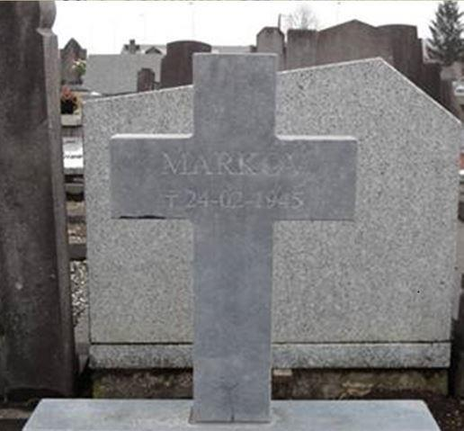En mai 2013, un monument de granit gris a été érigé à l’initiative de l’Ambassade de Russie en Belgique, sur financement public de la Fédération de Russie. L’inscription historique « MAPKOB †24.2.1945 » a été conservée sur la croix.
GENK
C’est au cimetière de Genk, province de Limbourg, que l’on retrouve le plus grand nombre de militaires soviétiques reposant sur le territoire belge : 70 sépultures. Chaque stèle est en forme de croix blanche où sont gravés les noms et dates de naissance et de disparition.
Sont inhumés au cimetière de Genk, les soldats soviétiques :
Sergeï Alekseevitch AGAFONOV
Né en 1899, Prov. de Moscou, District de Chtchyolkovo, Tchernychevo.
Prisonnier du Stalag IV B (304)
Mort le 6 mai 1943.
ALAKHVERDEV Mekhdyevitch (Alaverdyev, Oliverdyev)
Né en 1897, RSS d’Azerbaïdjan, District d’Agdam, Agdam.
Prisonnier du Stalag IVН.
Mort le 9 novembre 1943.
Ivan ANNIKOVITCH (Anikevitch Ivan Yakovlevitch)
Maréchal des logis.
Né le 3 janvier 1915, Prov. de Vitebsk District de Tolotchine.
Prisonnier du Stalag IV B (304).
Mort le 16 décembre 1942.
Vassili Trofimovitch BELKINE
Né le 26 février 1902, Prov. de Stalingrad, District de Bykovo, Bykovo.
Prisonnier du Stalag IV B (304) - Mort le 29 décembre 1942.
Iov (Yovi, Jovi) ATAEV
Né le 20 juin 1922, RSS du Turkménistan, Kolkhoze de Staline.
Prisonnier du Stalag IV B (304).
Mort le 1er janvier 1944.
Tursuk BERDYEV (Berdiaev -Berdyevitch)
Né en février 1921, RSS d’Ouzbékistan,
District de Bechken, Bagat.
Prisonnier du Stalag IV B (304).
Mort le 10 avril 1944.
Nuradim BISSENOV (Bissenov Nuradim Bissenovitch)
Né en janvier 1908, RSS du Kazakhstan, Prov. de Kyzylorda, District de Kazali.
Prisonnier du Stalag IV B (304) - Mort le 30 mai 1944.
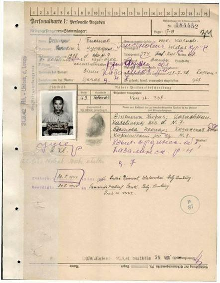
Grigori Efimovitch BRAJNIK
Né le 17 novembre 1901, RSS d’Ukraine, Prov. de Zaporojié, District de Guenitchesk, Novo-Dmitrovka.
Prisonnier du Stalag IV B (304) - Mort le 20 avril 1943.
Andreï Emelianovitch VASSIOUTINE
Né le 12 novembre 1907, Province de Rostov, District Azov, Vodiansk.
Prisonnier du Stalag IV B (304) - Mort le 10 décembre 1942.
Vassili Nikolaevitch VINNIK
Né le 20 janvier 1910, RSS d’Ukraine, Province de Kharkov, District de Dvoritchna, Olchana.
Prisonnier du Stalag IV B (304) - Mort le 9 mai 1943.
Vassili Yakovlevitch VLASSOV
Né le 29 décembre 1909, RSS d’Ukraine, Province de Kharkov, Barvenkovo, Zernosevkhoz.
Prisonnier du Stalag IV B (304) - Mort le 17 avril 1943.
Emelian Fedorovitch VOROCHILOV
Né le 4 août 1909, Région de l’Altaï, District de Pankrouchikha, Novo-Petrovsk/ Konëvo.
Prisonnier du Stalag IV B (304) - Mort le 2 décembre 1942.
Nikolaï Ivanovitch GNEVCHEV (Gnevzer)
Né le 16 octobre 1910, Omsk.
Prisonnier du Stalag IV h (304).
Mort le 22 novembre 1943.
Aleksandr Mikhaïlovitch GUSSEV
Maréchal des logis.
Né le 30 août 1915, Prov. de Kalinine, District d’Emelianovo, Khudarovo.
Prisonnier du Stalag IV H (304).
Mort le 18 juin 1943.
Ivan Nikolaevitch GUDIMOV
Né le 22 septembre 1918, Prov. de Sumy, Kalissy.
Prisonnier du Stalag IV B - Mort le 4 février 1943.
Ivan Leontievitch DANILINE
Né le 30 janvier 1998, Prov. de Penza, District de Pestrovskoye, Miejduretche.
Prisonnier du Stalag IV B - Mort le 4 avril 1944.
Aleksandr Parfenovitch DURAKOV
Né le 24 novembre 1924, Région de Stavropol, District de Trunov, Bezopasnoïe.
Prisonnier du Stalag IV B - Mort le 8 septembre 1943.
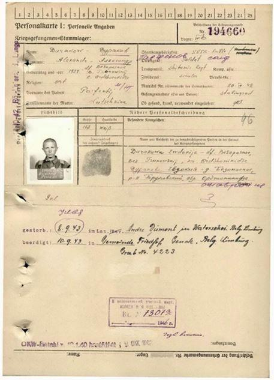
Nikifor Lazarevitch ELACHKO (Jelachko)
Né en 1913, RSS d’Ukraine, Prov. d’Odessa, District de Prigorodnoïe (Beliaevka ?), Tcherevitchnoïe - Prisonnier du Stalag IV B - Mort le 16 juillet 1943.
Ivan Mefodevitch ZADESSENETS
Né en février 1914, Prov. de Kharkov, Prosiany.
Prisonnier du Stalag IV B - Mort le 14 mars 1944.
Konstantin Petrovitch DRANIKOV
Sergent.
Né le 19 décembre 1919, Prov. de Smolensk, District de Kardymovo, Lobino.
Prisonnier du Stalag IV H(304).
Mort le 27 janvier 1944.
Vassili Grigorevitch KRIVENKO
Maréchal des logis.
Né le 18 décembre 1910, Prov. de Sumy District de Krolevets, Bojok.
Prisonnier du Stalag IV H (304).
Mort le 5 décembre 1942.
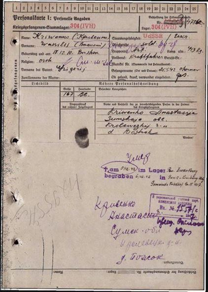
Nikita Petrovitch LITVINENKO
Né le 11 octobre 1903, RSA de Crimée, Saki, rue V. Krestyanskaïa 13.
Prisonnier du Stalag IV B - Mort le 17 novembre 1942.
Yakov Egorovitch MAKAROV
Né le 17 février 1901, Prov. de Tchkalovsk, District de Troïskoïe, Novy Touraï.
Prisonnier du Stalag IV B - Mort le 7 mars 1943.
Ivan Aleksandrovitch MAKSIMOV
Né le 15 août 1915, Prov. de Kouïbychev, District Bouyantsky, Tchagry.
Prisonnier du Stalag IV H(304).
Mort le 15 juin 1943.
Ivan Aleksandrovitch MALOFEEV (Malafeev)
Né le 30 novembre 1911, Prov. de Iaroslavl, Dom: Prov. de Smolensk, District de N-Jarkovsky, Kouznitsovo.
Prisonnier du Stalag 352.
Mort le 9 juin 1943.
Larion Fedotovitch MELNITCHENKO
Né le 6 juin 1898, Prov. de Kirovograd, Novo-Aleksandrovka.
Prisonnier du Stalag IV B - Mort le 9 décembre 1943.
Leonid Fedorovitch NAÏDENOV
Né le 14 février 1911, Prov. d’Ivanovo, Jary.
Prisonnier du Stalag IV H (304).
Mort le 20 juillet 1943.
Sergeï Alekseevitch PTAKHINE
Né le 25 mai 1900, Région de Krasnodar, Sotchi, rue Kirov, 15.
Prisonnier du Stalag IV K (326).
Mort le 12 janvier 1944.
Trofim Panteleevitch ROÏ
Né le 12 juin 1900, Prov. de Tchernigov, District de Losinoovstrovsk, Pustotino.
Prisonnier du Stalag IV K (326).
Mort le 2 décembre 1943.
Bazar Sultanovitch SULTANOV
Né en 1910, RSS du Turkmenistan, District de Farap, Bityvsky.
Prisonnier du Stalag IV H (304).
Mort le 30 mars 1944.
Aleksandr Stepanovitch TABAKOV
Né en 1912, Prov. de Saratov, District d’Ivanteevka, Kanoevka.
Prisonnier du Stalag IV H (304).
Mort le 22 février 1943.
Yakov Alekseevitch TESCHENKO (FESCHENKO)
Né le 23 octobre 1906, Prov. de Dniepropetrovsk, District de Nikopol, Lapinka.
Prisonnier du Stalag IV H (304).
Mort le 17 décembre 1942.
Mikhaïl Selivestrovitch TKATCHEV
Né le 15 juillet 1907, RSS d’Ukraine, Prov. de Kharkov, District de Borovaya, Gorokhovatka.
Prisonnier du Stalag IV B - Mort le 21 juin 1944.
Togaï-Baï Uvalievitch UVALIEV
Né en 1905, Prov. de Semipalatinsk Gorokhovatka.
Prisonnier du Stalag IV B - Mort le 20 avril 1944.
Vassili Stepanovitch TCHIJENKOV (Tchegenkov)
Né le 8 avril 1903, Prov. de Kouïbychev, District Bogdachsky, M. Bugurna.
Prisonnier du Stalag IV B - Mort le 28 octobre 1942.
Ivan Fedorovitch FEDOROV
Né le 25 septembre 1911, Prov. de Vologda District Lessky (Lejsky), Dresvische (Dresvitchi).
Prisonnier du Stalag IV H (304).
Mort le 21 juin 1944.
Afanassi Efremovitch CHALYGINE
Né le 29 juin 1911, Prov. d’Orel, District Potchensky, Polniki.
Prisonnier du Stalag IV H (304).
Mort le 9 mai 1943.
Vassili AVGUST
Né le 16 janvier 1916 à Krivoï Rog – Mort le 2 mai 1943.
Aleksandr ARBUZOV
Né le 30 octobre 1914 à Kovali– Mort le 20 février 1943.
Ivan VASSILENKO
Né le 16 janvier 1916 à Krivoï Rog – Mort le 2 mai 1943.
Andreï VASSILIUK
Né le 13 juillet 1921 à Rozine – Mort le 21 avril 1943.
Leonid GAVELKO
Né le 14 octobre 1910 à Tambov – Mort le 22 janvier 1943.
Alekseï Ivanovitch GORLATSOV
Né le 6 juillet 1923 à Novossibirsk – Mort le 14 novembre 1944.
Aleksandr ERMAK
Né le 23 décembre 1923 à Tchernigov-Priluki – Mort le 29 novembre 1943.
Kasimir ZAVADKSKY
Né le 7 juillet 1918 à Kholot – Mort le 17 avril 1943.
Leva ZOUBER
Né le 5 mai 1925 à Rostock – Mort le 28 juin 1944.
Danila KARPENKO
Né le 17 décembre 1892 à Vassilevka – Mort le 2 septembre 1942.
Piotr KLIMOV
Date de naissance inconnue – Mort le 11 septembre 1944.
Nikolaï KOVALËV
Né le 16 avril 1920 à Kharkov – Mort le 14 septembre 1943.
Ivan KOLESSA
Né le 9 octobre 1925 à Marmon-Levka – Mort le 13 octobre 1943.
Vassili KORTNEV
Date de naissance inconnue – Mort le 1er octobre 1944.
Ivan KURKIK
Né le 1er mars 1911 – Mort le 1er octobre 1942.
Vladimir LAZUKA
Né le 19 septembre 1920 à Volotsk – Mort le 2 février 1943.
Vassili LESSIK
Né en 1913 à Liditchev – Mort le 23 octobre 1942.
Denis LIZAKOV
Né le 1er octobre 1906 à Gorodovatka – Mort le 9 mai 1944.
Aleksandr MALAG
Né le 8 décembre 1925 à Saporask – Mort le 3 octobre 1944.
Leon MOROZOV
Né le 21 août 1914 à Birsk – Mort le 28 janvier 1943.
Sergeï OGARONOV
Né le 1er septembre 1899 à Tchernitchevo – Mort le 6 mai 1943.
Sergeï PANASYAK
Né le 7 décembre 1926 à Kalnetine – Mort à 15 ans le 12 octobre 1942.
Iogann POKIDO
Né le 3 juillet 1925 à Sanivka – Mort le 30 juin 1944.
Vladimir Stepanovitch RADZIEVSKY
Né le 6 juin 1912 à Grisky – Mort le 22 février 1945.
Anton RUDEV
Né le 16 juillet 1923 à Kremenetsk – Mort le 14 novembre 1944.
Ivan SAVTCHENKO
Né le 11 février 1923 à Fastov – Mort le 17 janvier 1944.
Grigori Ivanovitch TABAKOV
Maréchal des logis – Prisonnier au Stalag IV H (304)
Né le 8 décembre 1912 à Karassoul – Mort le 9 mars 1944.
Vladimir TERNAVSKY
Né le 22 mai 1925 à Valknialia – Mort le 6 avril 1943.
Leonid Aleksandrovitch KHAVELKO
Vétérinaire – Prisonnier au Stalag IV H (304).
Né le 14 octobre 1910 – Mort le 22 janvier 1943.
Nikolaï TCHERNOBAÏ
Né le 25 octobre 1925 à Fastov-Kiev – Mort le 29 février 1944.
Mikhaïl TCHESNOKOV
Né le 30 septembre 1923 à Staro-Mikhaïlovka – Mort le 13 octobre 1943.
Ivan CHEVTCHENKO
Né le 23 décembre 1927 à Motovische – Mort le 8 février 1944.
Vassili SCHERBININE
Né le 30 janvier 1905 à Saporask – Mort le 25 mai 1944.
Stepan Vassilievitch YUTCHENKO
Né le 8 décembre 1925 à Krasnoyarsk – Mort le 13 février 1945.
Ivan YAKUBTCHIK
Né le 10 mars 1913 à Vatslavine – Mort le 26 octobre 1942.
En 1990, une composition sculptée par A. Bourganov a été placée au centre de la sépulture avec, gravée sur le socle de granit, l’épitaphe suivante en russe, français et néerlandais « A la mémoire des combattants soviétiques tombés en terre limbourgeoise. 1941-1944».
ZOLDER
Au cimetière communal de Zolder, province de Limbourg, se trouvent quatre tombes soviétiques. Il s’agit d’une sépulture en forme de pelouse commune avec une seule pierre tombale posée au milieu. La dalle verticale est en granit gris et présente l’inscription néerlandaise en lettres de bronze : Gedensteen « Onbekende Russen » ter nagedachtenis van de russische krijgsegevangenen van Wereldoorlog II 1940-1945 (Monument aux « Soldats russes inconnus ». « En souvenir des prisonniers de guerre russes de la Seconde Guerre mondiale 1940-1945 »).
Ce monument a été érigé en 2004 par les autorités communales de Hezden-Zolder
L’étude des archives locales permet d’affirmer que sont inhumées dans ce cimetière les personnes suivantes :
Viktor SIGAJEV
Né le 23 octobre 1919 à Abalicha
Officier qui a certainement rejoint la Résistance.
Tué dans la forêt Vogelsang de Zolder le 27 avril 1944.
Alexandr JABLOKOV
Sur qui nous n’avons malheureusement pas de renseignements.
Pavel ZOLOTAR
Né le 12 juillet 1904, District de Retchetilowka, Prov. de Poltava, Tverdokhliby
Prisonnier de guerre, il décède des suites d’une maladie le 29 juin 1944 à Hasselt.
Petr SUMKOV (Pjotr SOEMKOV)
Né le 1er février 1913, originaire du village de Karmolino, district de Schëlkovo, Province de Moscou. Il a vécu dans la région de Stavropol, à Vorochilovsk. Militaire de carrière au sein de l’Armée Rouge dès 1932, il épouse Olga Nikititchna Droban.
Dernier poste : chef d’infirmerie du bataillon 332 médico-sanitaire de la division d’infanterie 270, médecin militaire de troisième rang. Emprisonné le 25 mai 1942. Envoyé en camp de travail dans le Limbourg (Belgique). A travaillé comme médecin du camp. Décédé de la tuberculose à l’hôpital Saint- François de la ville de Heusden le 19 février 1943.
Extrait du livre de Jean Put « Les prisonniers russes dans le Limbourg en 1942-19453 » :
Albert Leenders se souvient : "Cet homme (Petr Sumkov) était un médecin russe et parlait bien le néerlandais. Au cours de l’un de ses derniers jours, il m’a demandé d’écrire une lettre après la guerre à sa femme et à ses enfants, m’a donné leur adresse ainsi que le message écrit qu’il voulait leur envoyer. J’avais tout bien retenu mais, en raison des circonstances, j’ai tout perdu et je n’ai pas pu réaliser ses dernières volontés et j’en ai vraiment honte ».
Tous les efforts mis en œuvre par Albert pour retrouver la famille de son camarade après la guerre furent vains.
Après la mort du médecin russe, il organisa une levée de fonds pour « ériger un monument au prisonnier de guerre russe mort à l’hôpital ». Parmi les donateurs figuraient des ingénieurs, des ouvriers, des membres du personnel de l’hôpital, ses camarades de travail. Une somme de 950 francs belges fut finalement récoltée ».
L’Ambassade tient à remercier spécialement les autorités de Heusden-Zolder, et en particulier Monsieur Rik Lemmens, pour les informations fournies.
HOUTHALEN
Au cimetière de Houthalen (province de Limbourg) sont enterrés en sépulture commune quatre citoyens soviétiques, prisonniers de guerre décédés en 1943. La tombe est surmontée d’une croix en béton (érigée en novembre 2006 à l’initiative de l’Ambassade), sur laquelle sont gravés les noms et les dates de naissance et de décès des défunts.
Sont inhumés au cimetière d’Houthalen, les soldats soviétiques :
Pavel Davidovitch BYKOV (Bijkow Pawel)
Né en 1913, Prov. de Tambov, District de Platonovka, Chatilovo.
Adresse: Région de Primorié, District de Pojarskoié, Guberovo.
Prisonnier de guerre, il meurt le 31 mars 1943.
Makar Lazarevitch TITKO
Né le 15 janvier 1913, Prov. de Baranovitchi, Chilovitchi.
Prisonnier de guerre, il meurt le 14 avril 1943.
Nikolaï Nikolaïevitch USSANOV (Ussonow Nikolaj)
Né le 6 mai 1908, Prov. de Penza, Ichkino.
Adresse: RSS du Turkménistan, Achkhabad, rue de la Liberté 185.
Prisonnier de guerre, il meurt le 11 novembre 1943.
Maksim Ivanovitch TREMBATCHEV (Trembatchew Maxim)
Né le 21 janvier 1896, Prov. de Voronej, District Evdakovsky, Kroutets.
Prisonnier civil.
Mort le 11 février 1943.
Les tombes sont fleuries par les autorités communales en novembre, au moment de la Toussaint, et par l’Ambassade de Russie le 9 mai.
LEOPOLDSBURG
Le cimetière est situé à l’extrémité de la ville de Leopoldsburg (province de Limbourg). La sépulture est composée de six tombes disposées en rang de trois. Chaque tombe présente une croix (cinq en béton et une en bois). Seuls deux défunts ont été identifiés sur les six, les autres croix portent l’inscription « Russe inconnu » ou « Soldat russe inconnu ». La sépulture est datée 1943-1944.
(Ce cimetière est sous la tutelle du Ministère de la Défense de Belgique.
Jouravliev)
Sont inhumés au cimetière de Leopoldsburg, les soldats soviétiques :
Konstantin Timofeevitch PEREZ
Né en 1900, Poltava, Dikanka, Prov. de Stalingrad, Lugo-Chirokoïé.
Adresse: RSS du Turkménistan, Achkhabad, rue de la Liberté 185.
Prisonnier de guerre, il meurt le 26 mars 1943.
Michel Ivanovitch PEKCHEV
Né le 7 octobre 1918, District de Primorsk, Lugo-Chirokoïé.
Porté disparu depuis novembre 1942.
Mort le 23 août 1944.
Soldat dont l’identité est inconnue – Mort le 26 août 1944
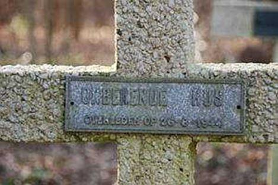Trois soldats inconnus morts en 1944.
KOERSEL
Au cimetière de Koersel (commune de Beringen, province de Limbourg) sont enterrés 23 prisonniers de guerre soviétiques, tombés entre 1942-1944 – d’après les données des autorités communales - au camp de concentration de Kleinheide et dans des communes avoisinantes.
Les sépultures sont disposées le long d’un mur de brique ; chacune présente une croix en bois peinte en brun foncé, sur laquelle sont gravés les noms, ainsi que la date (année) de naissance et de décès.
Sont inhumés au cimetière de Koersel, les soldats soviétiques :
Matwej Dmitrievitch MEDWEDEN
Né le 26 octobre 1903, Prov. de Voronej,District de Ternovka, Bradki.
Prisonnier de guerre, il meurt au Camp de Kleinheide le 21 décembre 1942.
Denis Tikhonovitch RUBANTCHUK
Né en 1908, Prov. de Kiev, District d’Ivanovo, Sukatchi.
Prisonnier de guerre, il meurt au Camp de Kleinheide le 27 décembre 1942.
Alexander Sergeevitch BAKLIZNY
Né le 23 septembre 1899, Prov. de Poltava, Kislaya Balka.
Agriculteur.
Prisonnier de guerre, il meurt au Camp de Kleinheide le 7 janvier 1943.
Andrej Korneevitch NEDELKIN
Né en 1907, Prov. de Rostov, District de Bolchekrepinskaya, Priut.
Tractoriste.
Prisonnier de guerre, il meurt au Camp de Kleinheide le 17 février 1943.
Pjoter Simionovitch KRYNIN
Né le 24 juillet 1907, Prov. d’Orel. District de Krasnozorensk, Leski.
Né en 1915, Prov. de Kharkov, District de Chevtchenko, Tropolje.
Chauffeur - Mort au camp de Kleineheide le 22 juin 1943.
Michael Prokhorovitch KOBKOW
Né en 1923, Prov. de Omsk, District de Poltavka, Eremeevka Zeithain (Allemagne).
Agriculteur – Mort au camp de Kleineheide le 26 novembre 1943.
Alexeï Nikiforovitch KRUTSKY
Né en 1915, Blagovetschensk.
Commerçant.
Prisonnier de guerre, il meurt à Heusden-Hal le 16 octobre 1943.
Luka Ossipovitch TSCHUGUNOW
Né le 7 décembre 1910, RSS Autonome de Tchouvachie, District de Krasnye Tchetaï, Kochkidino.
Mineur.
Prisonnier de guerre, il meurt à Genk-Waterschei le 5 décembre 1943.
Vassily Tarassovitch JACHOWSKY
Né en 1907, RSS du Kazakhstan, District de Lenger, Egorevka Tchetaï, Kochkidino.
Mineur.
Prisonnier de guerre, il meurt à Genk-Waterschei le 9 janvier 1944.
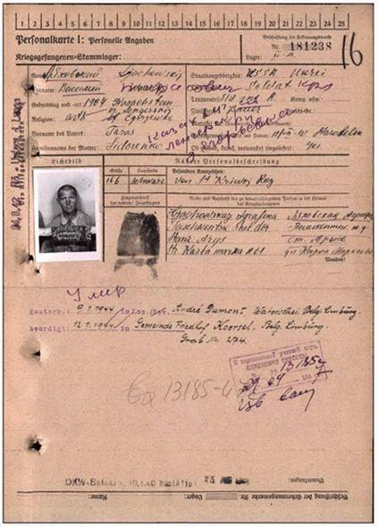
Matwej Nikolaevitch SCHUBIN
Né en 1898, RSS d’Azerbaïdjan
Adresse : Prov. de Kirovobad, District de Chahoumian, Baras.
Mort au camp de Kleineheide le 6 janvier 1944.
Iwan Fomitch DERJAGO
Né en 1915, Prov. Stalinskaya, District de Konstantinovsk Klischevka.
Mineur – Mort à Genk-Waterschei le 2 juillet 1944.
Kiril MORDWINOW
Né en 1903 à Rostov.
Ouvrier.
Prisonnier de guerre mort au camp de Kleinheide le 8 août 1944.
Pawel NACHDAJOW (Nachdayev)
Né en 1922 à Salewooje.
Terrassier.
Prisonnier de guerre mort au camp de Kleinheide le 7 juillet 1943.
Iwirj KISSELAW
Né en 1922 à Jurjewka.
Terrassier.
Prisonnier de guerre mort au camp de Kleinheide le 24 août 1944.
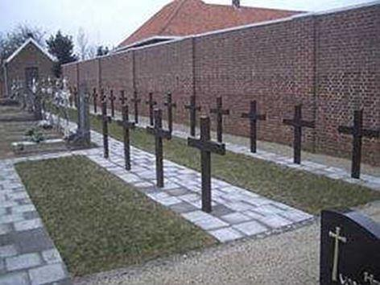
STAL-KOERSEL
Au cimetière de Stal-Koersel, Beringen (province de Limbourg) sont enterrés cinq citoyens soviétiques, des prisonniers de guerre qui seraient décédés, selon les informations fournies par les autorités locales, au camp de concentration voisin de Stal en 1942. Une croix de bois de couleur brun foncé est fixée sur chaque tombe, avec l’inscription gravée des noms et dates (année) de naissance et de mort.
Sont inhumés au cimetière de Leopoldsburg, selon les renseignements fournis par les autorités communales de Beringen, les soldats soviétiques :
Dmitri Ivanovitch KUZOVOV (KUSOWOW Dimitrij)
Né en 1902, RSSA de Mordovie, District d’Itchalki, Protassovo Kochkidino.
Terrassier.
Prisonnier de guerre, il meurt au Camp de Stal le 30 novembre 1942.
Mikhaïl Fedorovitch BONDAREV (Bondarjew)
Né le 29 novembre 1924, Personajsnoje, Prov. de Vorochilovgrad, Kaganovitch, rue Proletarskaya, 15.
Prisonnier de guerre, il meurt au Camp de Stal le 7 décembre 1942.
Mikhaïl Petrovitch GUBIACHKINE (Gubjaschkin)
Né le 18 novembre 1909, District de Kargat, Pokrovo-Donskoïe Personajsnoje, Prov. de Vorochilovgrad, Kaganovitch, rue Proletarskaya, 15.
Cuisinier.
Prisonnier de guerre, il meurt au Camp de Stal le 9 décembre 1942.
Paul Dmitrievitch TERESCHENKO (Pavel Tereschtschenko)
Né en 1913, Prov. de Smolensk, Korobino.
Agriculteur.
Prisonnier de guerre, il meurt au Camp de Stal le 14 décembre 1942.
Dajehan Passilovitch PASILOV (Dekhton Pasilew)
Né en 1916, Pargyny, RSS d’Ouzbékistan, Prov. de Ferghana.
Musulman – sans profession.
Prisonnier de guerre, il meurt au Camp de Stal le 16 décembre 1942.
BALEN
Un soldat soviétique (probablement membre de la Résistance) est enterré à Olmen le 13 septembre 1944, dans les faubourgs de Balen, en province de Limbourg. Il s’agit d’une sépulture commune où reposent des Belges tués par les occupants allemands, ainsi que le citoyen soviétique Alexander AIZIZEINOV.
TESSENDERLO
Au cimetière communal de Tessenderlo (province de Limbourg) est inhumé un ancien prisonnier de guerre soviétique dénommé Rachma GALIULINE (Rakhma, Rakhmatula), né le 13 mai 1909, originaire de la ville d’Oufa en République socialiste soviétique autonome de Bachkirie.
La sépulture a été localisée en 2010
Une croix en béton a été érigée sur la tombe, mais sans plaquette d’identité.
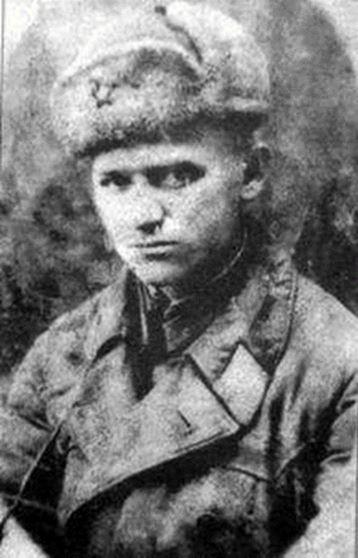Témoignage de François Bieselmans, fils de Rachma Galiuline
François Bieselmans en avril 2011Rachma Galiuline fut capturé et envoyé en Belgique pour y travailler dans des mines de charbon du côté de La Louvière et Maurage. Il parvint à s’en évader, en compagnie d’un autre prisonnier soviétique. Voulant peut-être reprendre la route de l’Est, ils n’aboutirent qu’à Tessenderlo (à 130 km environ de Maurage), où ils furent aidés par des membres de la Résistance belge.
Pendant plusieurs mois, ils se cachèrent dans des planques aménagées dans des maisons et des fermes appartenant aux habitants de la région, et parfois même dans des maquis forestiers. Il n’est pas à exclure que Rachma Galiuline ait pris part à la Résistance car il était équipé d’une arme à feu pendant un certain temps.
Après la libération de la Belgique de l’occupant fasciste en septembre 1944, Rachma Galiuline revint à Maurage, peut-être pour y retravailler dans la mine. Il retourne cependant à Tessenderlo le 10 mai 1945, car son fils vient d’y naître la veille, le 9 mai 1945, d’une habitante de la localité.
Rachma Galiuline meurt le 21 mai 1945 dans des circonstances restées inconnues. Son acte de décès est dressé par les autorités locales.
L'acte de décès signé par le bourgmestre de Tessenderlo
GENT
Dans la partie centrale du cimetière communal de Gent se trouve la tombe d’Arseny TECHOVSKY (Arsenki Teschowsky), mort au camp de concentration N°357 le 20 septembre 1943.
La sépulture, sans enclos, présente une dalle disposée verticalement. L’épitaphe suivante en russe et en néerlandais est gravée sur la tombe : « Personne n’est oublié. Rien n’est oublié ». Il est ajouté en néerlandais : « Un des 20 millions ».
KORTEMARK
Au cimetière communal de Kortemark (Flandre Occidentale) sont enterrés trois prisonniers de guerre soviétiques tués en juillet-août 1944 lors de la construction de l’ouvrage secret de la Wehrmacht repris sous le nom de code « V1 ».
Une photo du camp de concentration de Sylt sur l’île d’Alderney après la capitulation des nazis, au mois de mai 1945 (Autorisation : Trustees of the Royal Air Force Museum/ via Antiquity Publications)
De juillet à septembre 1944 périrent dans cette région au moins six prisonniers de guerre soviétiques, dispersés vers la Belgique à partir de la Baubrigade SS du camp disciplinaire de « Sylt », sur l’île britannique d’Alderney occupée par les Allemands. D’autres membres de la brigade reposent dans les communes de Proven et Reninge.
La sépulture se trouve au centre du cimetière. Il s’agit en réalité d’une sépulture commune, mais présentant des croix en béton individuelles où figurent en langue néerlandaise les noms, ainsi que les dates de naissance et de mort. Sept prisonniers y reposent. Seuls trois d’entre eux étaient citoyens soviétiques, les autres venaient de Pologne et de Tchéquie. Il n’est pas à exclure que certaines victimes soient répertoriées dans les archives comme décédées au camp de Buchenwald.
La sépulture a été localisée en 2010, grâce à la collaboration de Luc Vanacker de l’École Technique Libre d’Ypres
Sont inhumés au cimetière de Kortemark, les soldats soviétiques :
Sergej MASLIJ
Né en Ukraine.
Prisonnier de guerre, mort de la tuberculose le 3 août 1944.
Sergej BONDAR
Né en Ukraine.
Prisonnier de guerre, mort de la tuberculose le 7 août 1944.
Grigorij ALESSENKO (ALECHENKO, ALESCHENKO)
Né en Biélorussie.
Prisonnier de guerre, mort de la tuberculose le 14 août 1944.
RENINGE
D’après le témoignage d’un militaire allemand retrouvé aux archives allemandes de la ville de Luxembourg, le prisonnier de guerre soviétique Ivan Charburg (Iwan Scharburg) est inhumé au cimetière paroissial de Reninge (province de Flandre Occidentale). On en ignore la localisation précise, mais on sait que I. Charburg a été tué d’une balle dans la nuque par un de ses gardiens lors d’une tentative d’évasion avortée en août 1944.
Il faisait partie d’un groupe de prisonniers de guerre recrutés par la Wehrmacht pour la construction de l’ouvrage codé « V1 ». De juillet à septembre 1944, au moins six citoyens soviétiques dispersés vers la Belgique à partir de la Baubrigade SS de Sylt (sur l’île britannique d’Alderney, occupée par les Allemands) perdirent la vie dans la région. D’autres membres de cette brigade ont été inhumés à Westvleteren et Kortemark5.
WESTVLETEREN
Au cimetière paroissial de Westvleteren (province de Flandre Occidentale) se trouve la sépulture d’un prisonnier de guerre soviétique. D’après les informations, il s’agit de Fedor Fourman (né en 1923, originaire d’Ukraine), abattu en août 1944 lors de la construction de l’ouvrage secret de la Wehrmacht connu sous le nom de code « V1 ».
La sépulture se trouve à côté de l’église. Sur une croix en béton est fixée une plaquette avec l’inscription en néerlandais «TjedorFourman, slachtoffernazi-terreur, + zomer1944» («Fedor Fourman, victime de la terreur nazie, + été 1944»). D’après les dernières recherches, il aurait été battu à mort par des gardes à la suite d’une tentative d’évasion6.
CÉRÉMONIES SOLENNELLES ANNUELLES D’HOMMAGE
2019
2018
2020
PROVEN
Au cimetière paroissial de Proven (province de Flandre Occidentale) repose un prisonnier de guerre soviétique. D’après les informations, il s’agit de Grigori KUKOBKO, né le 23 avril 1923 à Tchernigov et tué lors de la construction de l’ouvrage secret de la Wehrmacht codé « V1 ».
La sépulture est disposée dans l’enclos de l’église, à côté de cinq militaires britanniques tombés en 1940. Sur une croix en béton a été fixée une plaquette avec l’inscription en néerlandais « Kukobko Gregori, de nationalité russe, mort à Proven le 7.12.1944 ». D’après des études plus précises, la date du décès est le 11 août 19445.
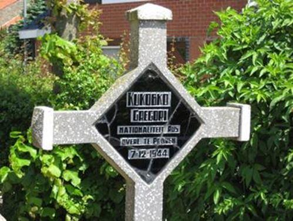Il n’est pas à exclure que ce Grigori Kukobko inhumé ici à Proven soit également répertorié dans les archives comme étant décédé au camp de Buchenwald le 06 octobre 1944.
Comme évoqué en préambule, cette présentation des sépultures des soldats soviétiques inhumés en terre belge n’est assurément pas exhaustive et s’appuie sur le travail considérable réalisé par l’Ambassade de Russie en Belgique.
F.M.
L’Ambassade sera reconnaissante pour des informations et des photos des sépultures militaires soviétiques de la Seconde Guerre mondiale en Belgique et des cérémonies qui ont lieu là-bas.
Veuillez envoyer vos documents à l'adresse électronique de l'Ambassade amrusbel@skynet.be avec la note « Tombes de Guerre ».
NOTES ET RÉFÉRENCES
1. Georges Pécheur, « Awenne aux portes de l’Ardenne », Editions Histoire Collective, 1998, p.288.
2. Georges Pécheur, ibid.
3. Jean Put « Russische Krijgsgevangenen in Limburg 1942-1945 ».
4. Nom du beau-père.
5. Nous remercions Luc Vanacker de l’Ecole Technique Libre d’Ypres pour les informations fournies.
6. La sépulture a été découverte en juin 2010 en collaboration avec Luc Vanacker de l’École Technique Libre d’Ypres.


Partager cette page